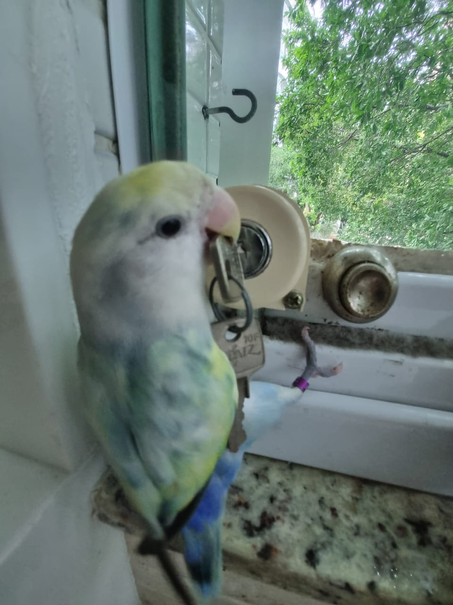
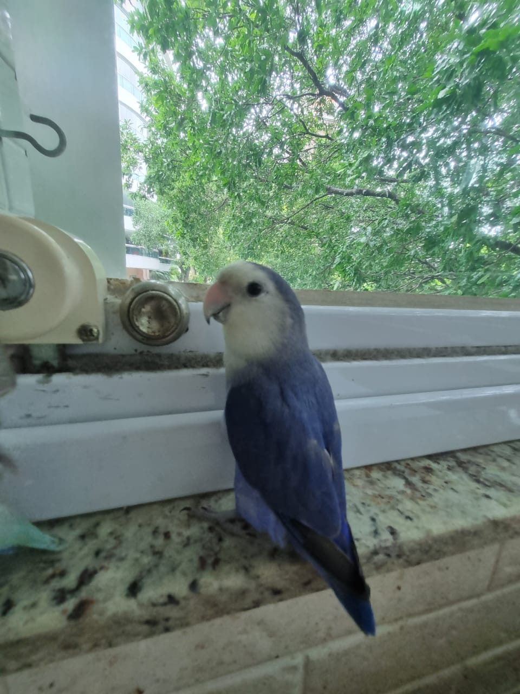
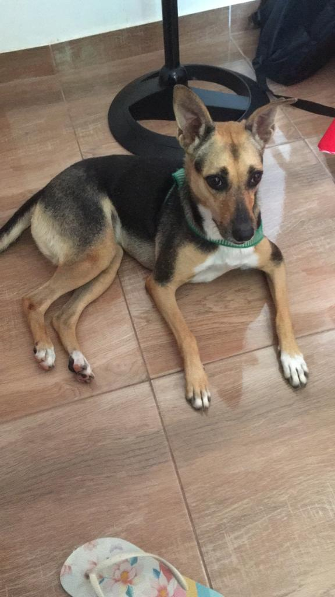
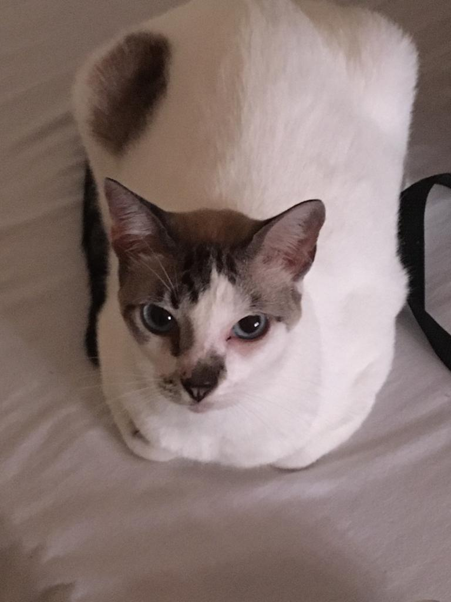
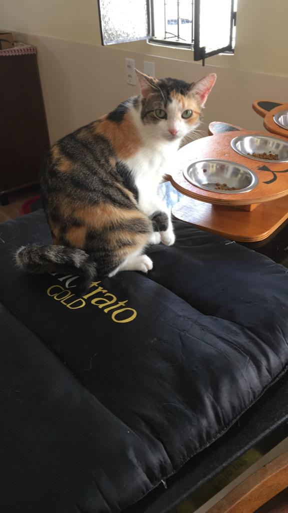

Espécie: Ave, fêmea
Nome: Shakira
Raça: --
Descrição: Penas brancas, amarelas e verde. Tem uma mancha verde na ponta do bico
Visto por ultimo: Aos arredores da rua Antonio Gonzaga alvorada 2.
Contato: 92 00000 0123
Ultima Semana
 Ultimo Mês
Ultimo Mês

Espécie: Ave, macho
Nome: Shazam
Raça: --
Descrição: Dócil, assustado, também atende por titi, tem um corte pequeno na orelha.
Visto por ultimo: Rua Duartina no bairro monte sinai, proximo a escola Jesus me deu
Contato: 92 00000 0122

Espécie: Ave, fêmea
Nome: Mina
Raça: --
Descrição: Penas cinzas e amarelas. Um pouco arisca, mas não ataca.
Visto por ultimo: Na descida da norte ferro, no manoa.
Contato: 92 00000 0111

Espécie: cachorro, fêmea
Nome: Kasumi
Raça: Vira-lata
Descrição: Pelagem branca, amarela e preta, dócil. Tem uma coleira verde.
Visto por ultimo: Na entrada do lírio do vale na avenida laguna.
Contato: 92 00000 2301

Espécie: Gata, fêmea
Nome: Mia
Raça: vira-lata
Descrição: Dócil, atende pelo nome de mia, tem uma mancha marrom nas costas.
Visto por ultimo: Rua Rui Barbosa, centro, próximo as óticas.
Contato: 92 00000 0111

Espécie: Gata, fêmea
Nome: Hope
Raça: vira-lata
Descrição: É assustada mas não é violenta, atende pelo nome, é castrada e vacinada.
Visto por ultimo: Campo do Buracão, nova Esperança.
Contato: 92 00000 0321